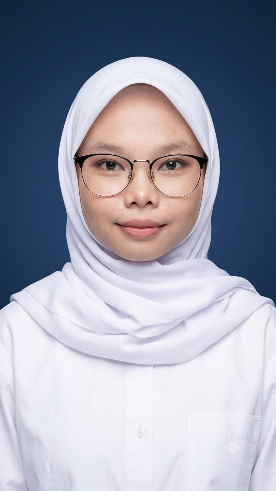

Hi, Saya Hamidah Qudsyiatun Nufus
Full-Stack Web Developer & System Analyst
Mahasiswa S1 Informatika di STIKOM El-Rahma yang berdedikasi tinggi dengan keahlian dalam perancangan aplikasi web full-stack, analisis sistem informasi, dan manajemen basis data relasional. Menggabungkan kemampuan teknis rekayasa perangkat lunak dengan latar belakang profesional di bidang administrasi CRM dan pelayanan pelanggan.
Keahlian & Kompetensi Teknis
Teknologi dan alat yang saya kuasai dalam pengembangan perangkat lunak.
Web Development
Frontend & Backend Technologies
Database Systems
Relational & In-Memory Databases
System Analysis & Modeling
Architecture & Documentation
Tools & UI/UX Design
Design & Version Control
Pengalaman Kerja
Rekam jejak profesional dalam pengelolaan data dan pelayanan publik.
Customer Service & CRM Administrator
Pondok Pesantren Al-Bahjah
- Mengelola komunikasi dan menjadi pusat informasi utama bagi calon siswa serta orang tua, mempertahankan tingkat responsivitas dan kepuasan layanan yang tinggi.
- Mengoperasikan dan memelihara sistem basis data (CRM), melakukan follow-up berkala yang berkontribusi secara langsung terhadap peningkatan rasio konversi pendaftaran siswa baru.
- Mengkoordinasikan jadwal pelaksanaan tes seleksi penerimaan serta melakukan verifikasi administrasi pendaftaran dan transaksi pembayaran secara akurat.
- Menyelesaikan kendala serta mengelola masukan dari orang tua murid secara empati, analitis, dan profesional untuk menjaga reputasi institusi.
Proyek & Pengalaman Teknis
Studi kasus, arsitektur sistem, dan implementasi perangkat lunak yang pernah dibangun.
E-Commerce & Management System (CrashCo & UTSmart)
Membangun platform aplikasi web terintegrasi dengan otomatisasi pemrosesan transaksi dan sistem manajemen persediaan barang secara otomatis.
- Payment Gateway Midtrans Integration
- WhatsApp API Real-time Notification
- Stock Management & Transaction Tracking
SCM & Edustore System Architecture Design
Merancang arsitektur sistem Supply Chain Management (SCM) end-to-end serta dokumentasi pemodelan bisnis terstruktur.
- Pemodelan Alur Proses Bisnis DFD
- Merancang Skema Relational ERD
- Analisis Pemantauan Sistem Edustore
Interactive Web Solutions & Prototyping
Pengembangan aplikasi web kreatif seperti undangan digital interaktif, browser-based animated game, serta prototyping antarmuka pengguna.
- Browser Animated Game App
- Digital Invitation Platform
- Interactive Prototyping & Usability
Pendidikan & Pelatihan
Latar belakang pendidikan formal dan sertifikasi non-formal.
S1 Informatika
STIKOM El-Rahma
Fokus Studi: Pengembangan Web Full-Stack, Analisis & Perancangan Sistem, Manajemen Basis Data Relasional.
UI/UX Design Training
Pendidikan Non-Formal / Kursus
Mempelajari Wireframing, Prototyping interaktif, serta perancangan dan validasi desain Mockup Web & Aplikasi.
Multimedia
SMK Komputer Indonesia
Dasar-dasar desain grafis, editing media, dan pengembangan dasar teknologi informasi.
Tertarik Berkolaborasi?
Saya selalu terbuka untuk diskusi mengenai proyek Web Development, Analisis Sistem, atau peluang karir. Silakan hubungi saya melalui pesan singkat atau email.